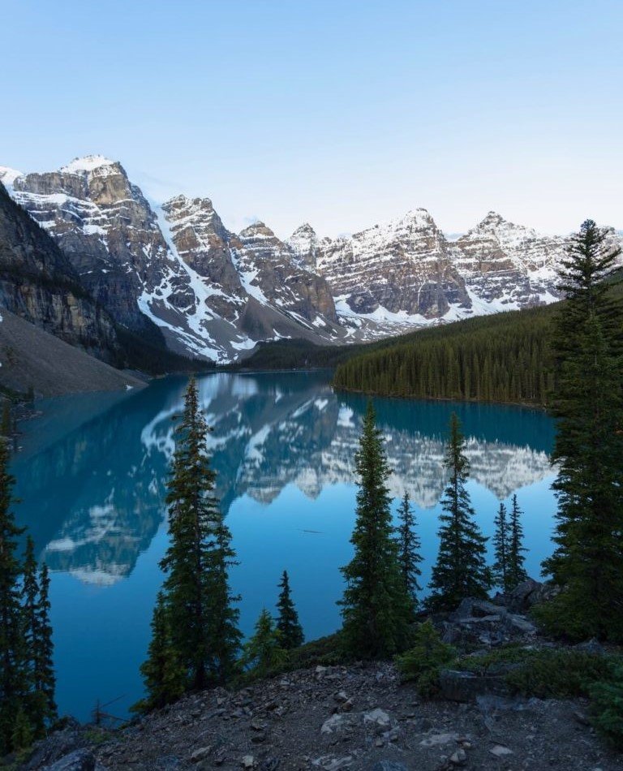

Chicago é conhecida como a Cidade dos Ventos
nós acreditamos que ela se torna ainda mais bonita durante o inverno
quando se transforma na Cidade da Neve.

Imagine uma série de dezesseis lagos azul-turquesa,
com água fluindo de um para o outro em forma de cascata em uma mostra inesquecível da majestade
e do poder da água.

A atração estrelada deste parque é, sem dúvida, o Lago Moraine
Passeio com raquetes de neve por Banff.
